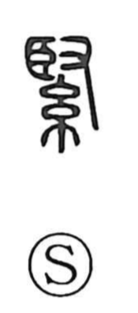

緊

Kun: | On: kin
tight ・ tense ・ to tighten ・ strict
Explanation
緊 is a phono-semantic character. Its sound is carried by a component shaped as a hand (又) thrust into the eye-like 臣—an image of injuring the pupil to blind a captive on one side and dedicate him to divine service. The graph evokes the taut heart and tightened body of the person facing that rite, and from this arise the senses of tightening, bracing, hardness, and severity. In older practice, people from other groups were seized and made one-eyed to serve the gods; in Japan as well, the figure of the one-eyed temple boy (hitotsume kozō) echoes this. The character thus preserves an ethnological memory that explains its strong, constricting overtones.